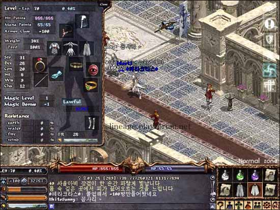
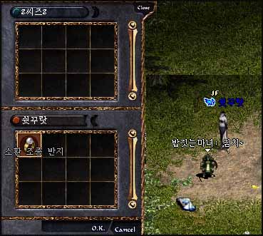
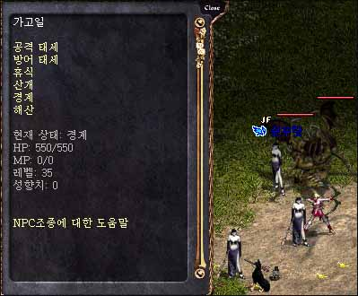
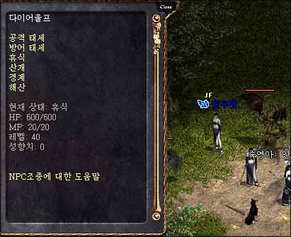
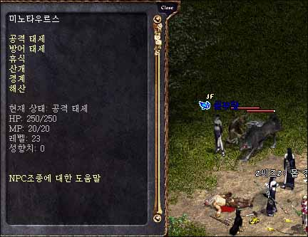
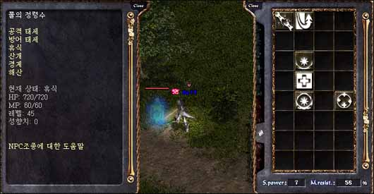

|
2003年3月27日
韓國出現70級-100防角色
來源：Lineage Playforum

我們估計他的裝備為+9T恤(9)，+9保斗(12)，+7/8水晶手套(10/11)，古代金甲(16)，+9紅騎盾(11)，+8/9鋼靴(11/12)，+9騎面(12)，再配合鋼鐵防禦(8)及鎧甲護持(3)魔法效果，加上本身的敏捷減防(17)，便剛剛有-100防了！
假如再配合古代巨人戒指或韓國正式剛剛更新45級騎士任務中的勇氣皮帶，相信他的防禦可以突破-100！
第十二章新召喚資料
來源：Lineage Playforum

在韓國伺服器中出現了召喚控制戒指，玩家在穿了此戒指後在使用召喚術時可以召喚一些特別的怪物。

48級召喚怪物：翼魔，體力550，魔力0，等級35

52級召喚怪物：魔狼，體力600，魔力20，等級40

40級召喚怪物：牛人，體力250，魔力20，等級23

召喚高級元素精靈（水系）：體力720，魔力60，等級45，速度與普通的元素精靈差不多，但攻擊力較強
韓國正式伺服器3月26日更新內容
原文：韓國天堂官方網站公告
日文翻譯：Lineage Report
1. 繼王族45級任務後，加入騎士、妖精及法師的45級任務。
2. 在各村落加入創立血盟的NPC，玩家不能再用/create指令去創立血盟。
3. 在亞丁教堂中加入結婚系統。
4. 開放了更多的亞丁城血盟小屋，玩家可以在中央的佈告欄競投。
5. 在遊戲選項中可以調較音效及音樂的音量大小，另外玩家可以從聲音的大小及方向得知音源的位置。
6. 調整了亞丁城的稅收，及調整了亞丁貧民區商人所售賣的道具種類。
7. 當巨人的體力降至某程度，牠們會使用投石攻擊。
8. 重新調整了肯恩及賽尼斯的體力。
9. 調整了傲慢之塔部份怪物看穿變身的能力。
10. 修正了聯盟高階頻道的顏色。
11. 調整了果凍怪的攻擊傷害及攻擊範圍。
12. 調整了風龍出現及飛上天空的機會。 |